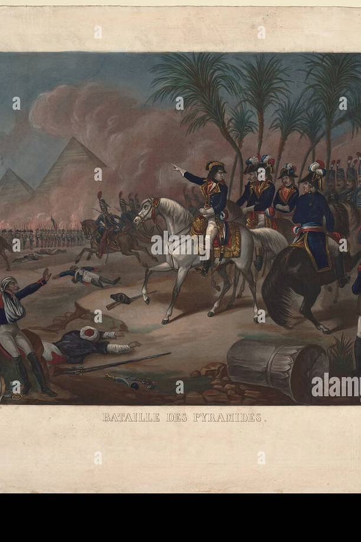
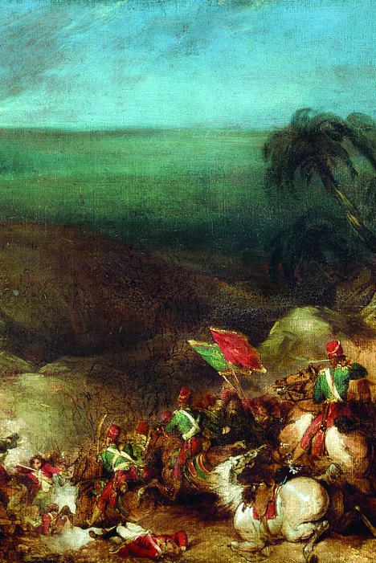
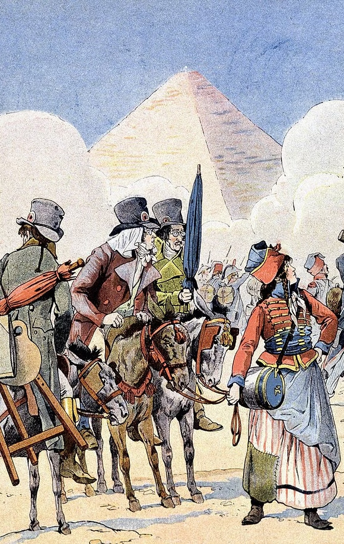
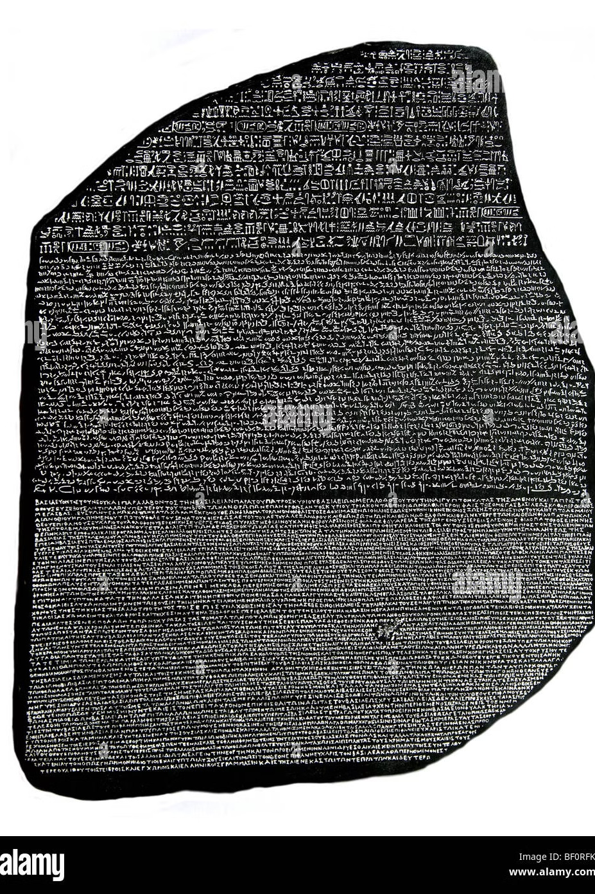

للاستزادة: شرح المرشد السياحي بالإنجليزية
🎙️
TOUR GUIDE SPOKEN SCRIPT
Explaining Cairo's Popular Resistance & The Expulsion of the French
▼
Explaining Cairo's Popular Resistance & The Expulsion of the French
"Distinguished guests, walking through the historic alleys of Al-Azhar and the old riverside port of Bulaq, we are walking on sacred ground of Egyptian resistance. In October 1798, outraged by heavy taxation and the demolition of urban gates and historic mosques, Cairo erupted in the First Cairo Revolt. Al-Azhar Mosque served as the command center. The French military governor, General Dupuy, was killed alongside 200 French soldiers. Napoleon retaliated with extreme brutality: his artillery bombarded the minarets from the Citadel and Mokattam hills, and French cavalry galloped right into the sacred courtyards of Al-Azhar."
"Eighteen months later, in March 1800, under Kléber's command, the Second Cairo Revolt broke out in Bulaq, led by the charismatic merchant leader Sayyid Omar Makram and Mostafa El-Beshtili. Egyptians melted iron from mosques to manufacture homemade cannons and set up gunpowder mills in Al-Khoronfosh. Kléber mercilessly burned the entire neighborhood of Bulaq to the ground. Yet his triumph was short-lived: on June 14, 1800, a Syrian theology student named Suleiman al-Halabi assassinated him in the Ezbekiyeh gardens."
"By 1801, under the inept leadership of General Menou, a combined British and Ottoman offensive crushed the French at the Battle of Canopus (Alexandria). Under the terms of French capitulation, the British seized all French archaeological treasures—most notably the Rosetta Stone—shipping them to London, while the last French soldier departed Egyptian soil in September 1801."
📖
قاموس ومصطلحات المحاضرة للمرشد (اضغط هنا لفتح / طي القاموس)
TOUR GUIDE BILINGUAL GLOSSARY
▼
قاموس ومصطلحات المحاضرة للمرشد (اضغط هنا لفتح / طي القاموس)
TOUR GUIDE BILINGUAL GLOSSARY💡 تنبيه للمرشد السياحي: هذه المصطلحات والكلمات مستخرجة من المنهج الأكاديمي المعتمد، ومزودة بالنطق الصوتي والمعنى السياقي للمرشد:
ثورة القاهرة الأولى
ثورة القاهرة الأولى
First Cairo Revolt
/fɜːrst ˈkaɪroʊ rɪˈvoʊlt/ (Oct 1798)
▼
ثورة القاهرة الأولى
المعنى السياقي للمرشد:انتفاضة شعبية كبرى قادها الأزهر الشريف؛ قُتل فيها حاكم القاهرة ديبوي وياور نابليون سولكوسكي، وقصف نابليون الأزهر واقتحمه بالخيول.
ثورة القاهرة الثانية
ثورة القاهرة الثانية
Second Cairo Revolt
/ˈsɛkənd ˈkaɪroʊ rɪˈvoʊlt/ (Mar 1800)
▼
ثورة القاهرة الثانية
المعنى السياقي للمرشد:اندلعت من حي بولاق بزعامة عمر مكرم ومصطفى البشتيلي إثر فشل اتفاقية العريش وهزيمة العثمانيين بعين شمس؛ صمدت شهراً ودمر كليبر بولاق.
اتفاقية العريش
اتفاقية العريش
Convention of El-Arish
/kənˈvɛnʃən əv ɛl-əˈriːʃ/ (Jan 1800)
▼
اتفاقية العريش
المعنى السياقي للمرشد:اتفاق بين كليبر والدولة العثمانية برعاية الإنجليزي سيدني سميث للجلاء بسلاحهم خلال 3 أشهر، وأفشلها تعنت اللورد كيث البريطاني.
موقعة عين شمس
موقعة عين شمس
Battle of Heliopolis
/ˈbætl əv ˌhiːliˈɒpəlɪs/ (20 Mar 1800)
▼
موقعة عين شمس
المعنى السياقي للمرشد:معركة خاطفة هزم فيها كليبر الجيش العثماني الزاحف وأجبره على الفرار للشام بعد رفض كيث شروط العريش.
سليمان الحلبي
سليمان الحلبي
Suleiman al-Halabi
/suːleɪˈmɑːn æl-hæləˈbiː/
▼
سليمان الحلبي
المعنى السياقي للمرشد:طالب أزهري سوري اغتال الجنرال كليبر بطعنة خنجر في حديقة قصره بالأزبكية في 14 يونيو 1800م انتقاماً لتدمير حي بولاق.
معركة كانوب (الإسكندرية)
معركة كانوب (الإسكندرية)
Battle of Canopus
/ˈbætl əv kəˈnoʊpəs/ (21 Mar 1801)
▼
معركة كانوب (الإسكندرية)
المعنى السياقي للمرشد:المعركة البرية الفاصلة عند باب شرقي بالإسكندرية؛ هزم فيها الحلف البريطاني العثماني الجنرال مينو وقضى على الوجود الفرنسي.
الجنرال مينو
الجنرال مينو
General Menou
/ʒeneˈʁal məˈnu/ (Abdullah Menou)
▼
الجنرال مينو
المعنى السياقي للمرشد:القائد الثالث للحملة؛ أعلن إسلامه وتزوج من رشيد، ارتكب خطأً عسكرياً فادحاً بتشتيت قواته لأربعة أقسام مما سهل هزيمته وحصاره.
الإنكشارية
الإنكشارية
Janissaries
/ˈdʒænɪsəriːz/ (Ottoman Elite)
▼
الإنكشارية
المعنى السياقي للمرشد:قوات النخبة العثمانية (6000 مقاتل) التي وصلت لدعم الإنجليز واستولت على رشيد والرحمانية وقطعت اتصال القاهرة بالإسكندرية.
الجنرال بليار
الجنرال بليار
General Belliard
/ʒeneˈʁal bɛljaʁ/
▼
الجنرال بليار
المعنى السياقي للمرشد:قائد القوات الفرنسية في القاهرة؛ حوصر بين إمبابة والبر الشرقي فوقع اتفاقية جلاء القاهرة في 27 يونيو 1801م وغادر بنصف الجيش.
مصادرة الآثار وحجر رشيد
مصادرة الآثار وحجر رشيد
Confiscation of Antiquities
/ˌkɒnfɪsˈkeɪʃən əv ænˈtɪkwɪtiz/
▼
مصادرة الآثار وحجر رشيد
المعنى السياقي للمرشد:البند القسري في اتفاقية استسلام الإسكندرية (أغسطس 1801م) الذي أصر به الإنجليز على مصادرة حجر رشيد وآثار المجمع العلمي كغنائم حرب.
مصانع بارود الخرنفش
مصانع بارود الخرنفش
Gunpowder Mills of Khoronfosh
/ˈɡʌnpaʊdər mɪlz/
▼
مصانع بارود الخرنفش
المعنى السياقي للمرشد:ورش التصنيع العسكري السرية التي أقامها ثوار القاهرة بحي الخرنفش لصهر حديد المساجد والدكاكين وصنع القنابل وإصلاح المدافع.
أبواب الحارات والدروب
أبواب الحارات والدروب
Quarter Gates
/ˈkwɔːrtər ɡeɪts/
▼
أبواب الحارات والدروب
المعنى السياقي للمرشد:الأبواب الخشبية التاريخية التي كانت تغلق الحارات ليلاً لحماية الأهالي؛ هدمها الفرنسيون لتسهيل اقتحام المنازل مما فجر الثورة الأولى.
أولاً: المقاومة الشعبية — ثورة القاهرة الأولى (أكتوبر 1798م)
🔥 ١. أسباب اندلاع الثورة (أثناء معارك إخضاع الصعيد):
خلال انشغال القوات الفرنسية في معارك إخضاع صعيد مصر ضد المقاومة الوطنية وبقايا المماليك، انفجر بركان الغضب الشعبي في العاصمة للأسباب الآتية:
فرض نابليون ضرائب مالية باهظة وقاسية خاصة على فئة التجار، وهو ما ناقض تماماً منشوراته ووعوده التي قطعها عند قدومه بإنصاف المصريين من مظالم المماليك، فكان هذا العامل المحرك الأكبر للغضب.
قامت فرق التفتيش الفرنسية باقتحام البيوت وتفتيش الدكاكين بحثاً عن الأموال المخفية، وأقدمت على هدم أبواب الحارات والدروب التاريخية لتسهيل اقتحام الجنود لمطاردة عناصر المقاومة الوطنية.
أقدم الفرنسيون على هدم كثير من المباني والآثار والمساجد بحجة تحصين القاهرة. ولما كان العبء الضريبي الأكبر قد وقع على التجار والملاك وأصحاب الحرف، فقد أمدوا الثورة بالمال والسلاح لضمان استمرارها.
🕌 ٢. قيادة الأزهر الشريف وانطلاق الشرارة (21 أكتوبر 1798م):
وقائع ثورة القاهرة الأولى ودور الأزهر الشريف (أكتوبر 1798م):
قاد علماء ومشايخ الأزهر الشريف الثورة ونظموا قبول المتطوعين وتجهيزهم بالسلاح. وكانت الدعوة تتردد على ألسنة الأهالي حتى جاءت الضرائب الجديدة فزادت أعداد الناقمين وسرت الروح إلى الملاك والتجار.
في يوم 21 أكتوبر 1798م، قرر دعاة الثورة إغلاق الدكاكين وحشد أصحاب الصنائع والذهاب لمركز القيادة العامة للاحتجاج. وتوافد الفلاحون من القرى والأقاليم، وسادت حالة من الغضب المسلح، واتخذ الثوار من الجامع الأزهر الشريف مقراً رسمياً للقيادة.
💣 ٣. رد الفعل الفرنسي العسكري:
أعلن نابليون بونابرت النفير العام، ونصب مدافعه على هضبة المقطم وداخل قلعة صلاح الدين وعند مداخل الشوارع الرئيسة لضرب الجامع الأزهر والأحياء الثائرة.
فتح الثوار أبواب القاهرة لاستقبال المدد القادم من الأقاليم متسلحين بالعصي والرماح؛ فحاصر نابليون الضواحي لعزل العاصمة، وحاول الثوار مهاجمة القلعة والمقطم لكن فارق التسليح حسم الموقف. وشهدت المواجهة مقتل الكولونيل «سولكوسكي» ياور نابليون الخاص، فحزن عليه بونابرت حزناً شديداً.
⚔️ ٤. القمع وانتهاء الثورة وتدنيس الأزهر:
انحصر الثوار داخل حي الأزهر وفشلت وساطة المشايخ، فأمر نابليون بالقصف المدفعي المباشر على الجامع الشريف والأحياء المحيطة به، مما أحدث دماراً هائلاً واضطر الثوار لطلب الهدنة.
تدنيس الجامع الأزهر: انتهت المفاوضات بإلقاء السلاح، فاقتحم الجنود الفرنسيون الأزهر بخيولهم وعسكروا في باحاته ومزقوا المصاحف، مما أهاج الشعور الديني في العالمين الإسلامي والعربي.
ثانياً: ثورة القاهرة الثانية (مارس – أبريل 1800م)
📜 ١. أسباب الثورة وظروفها الإقليمية:
اندلعت ثورة القاهرة الثانية في 20 مارس 1800م، بعد انتقال القيادة من بونابرت (الذي فر سراً لفرنسا) إلى خليفته الجنرال «كليبر»:
كان كليبر راغباً في الرحيل لتناقص قواته وحصار السواحل، ففاوض الدولة العثمانية والوسيط الإنجليزي سيدني سميث لتوقيع «اتفاقية العريش» لجلاء الفرنسيين بكامل أسلحتهم على نفقة العثمانيين خلال ثلاثة أشهر.
بينما بدأ الفرنسيون بإخلاء المواقع، وصلت رسالة قائد الأسطول البريطاني «اللورد كيث» برفض الاتفاقية، مصراً على أن يستسلم الفرنسيون كـ «أسرى حرب بلا سلاح». اعتبر كليبر ذلك إهانة عسكرية فأعلن الحرب وانتصر في موقعة «عين شمس» (20 مارس 1800م).
استغل المصريون خروج كليبر بجيشه لقتال العثمانيين، مدفوعين بالرغبة في التحرر التام، لا سيما بعد انتشار شائعة قوية بهزيمة الفرنسيين في عين شمس، فاندلعت الثورة في قلب العاصمة.
⚓ ٢. اندلاع الثورة من حي بولاق والمقاومة الشعبية:
انطلقت شرارة الثورة من ميناء النيل بحي بولاق، وتزعمها كبار العلماء والتجار: السيد عمر مكرم، الشيخ الجوهري، السيد أحمد المحروقي، والزعيم الشعبي مصطفى البشتيلي.
هاجم الثوار المعسكر الفرنسي بالأزبكية مستخدمين المدافع العثمانية والمدافع المدفونة ببيوت المماليك. وأقاموا مصانع للبارود في حي الخرنفش وصهروا حديد المساجد والحوانيت لصنع القنابل، وشيدوا المتاريس وبثوا العيون لكشف خطط المحتل، بينما تولى كبار التجار إمداد الثوار بالمؤن والأغذية.

شكل (١): ملاحم الصمود الشعبي في القاهرة وبولاق (وثيقة تاريخية)ثالثاً: سياسة كليبر في شق الصف والتحالفات واغتياله
رغم اتفاق المصريين والعثمانيين والمماليك، نجح كليبر في شق الصف؛ ففتح المفاوضات مع العثمانيين وأقنعهم بالكف عن القتال بعد إطلاعهم على هزيمة جيشهم في عين شمس وفرارهم للشام.
توصل الفرنسيون لاتفاق تاريخي مع زعيم المماليك «مراد بك»، الذي آثر مصلحته الشخصية وتصالح مع الفرنسيين مقابل منحه ولاية وحكم الصعيد.
أخرج كليبر العثمانيين والمماليك من الصراع وأخضع الوجه البحري بالقوة، ليبقى أهالي القاهرة بمفردهم في مواجهة آلة الحرب الفرنسية المدمرة.
ملحمة ثورة القاهرة الثانية، صمود بولاق، واغتيال كليبر (1800م):
حريق حي بولاق واغتيال كليبر:
صب كليبر مدافع حصاره بوحشية على أحياء القاهرة، ولجأ الفرنسيون إلى إضرام النيران في المناطق الآهلة بالسكان وإحراق أحياء بأكملها، حيث دُمّر حي بولاق تماماً وسُوّي بالأرض.
اضطر زعماء الشعب لبذل مساعيهم لحقن الدماء، فعُقد اتفاق في 21 أبريل 1800م تضمن جلاء العثمانيين والمماليك وعفو كليبر العام عن الأهالي (وهو العفو الذي نقضه كليبر لاحقاً بالتنكيل وفرض غرامات قاسية).
رابعاً: رحيل الحملة — قيادة "مينو" ومعركة كانوب (1801م)
١. قيادة "مينو" للحملة والخطأ العسكري الفادح:
بمقتل كليبر، انتقلت قيادة الجيش إلى الجنرال «مينو»، ولم يكن مينو محنكاً عسكرياً كسابقيه (بونابرت وكليبر) إذ لم يسبق له قيادة الجيوش أو كسب موقعة قط. فاغتنمت بريطانيا هذا الضعف وتحالفت مع الدولة العثمانية لإعداد زحف عسكري مشترك لإخراج الفرنسيين.
أبحرت الحملة البريطانية وسفن المدفعية العثمانية لترسو على شواطئ خليج أبي قير في أوائل مارس 1801م، واشتبكوا مع الفرنسيين في معركة «سيدي جابر» وانتصر الحليفان وبدأ التقدم للإسكندرية.

شكل (٢): معركة كانوب الفاصلة عند أسوار الإسكندرية (وثيقة تاريخية)٢. معركة كانوب (معركة الإسكندرية — 21 مارس 1801م):
التقى الجيشان الفرنسي والبريطاني عند «كانوب» في 21 مارس 1801م؛ وهي المعركة الفاصلة التي أجهزت على الوجود الفرنسي. مُني الفرنسيون بهزيمة منكرة وتراجعوا ليتحصنوا خلف أسوار الإسكندرية عند منطقة باب شرقي.
فتح هذا الانتصار الطريق لتوغل الإنجليز، ودعم الموقف وصول 6 آلاف جندي من الإنكشارية العثمانية، فاستولوا على رشيد والرحمانية، مما قطع صلة الوصل تماماً بين قوات القاهرة ومينو المحاصر بالإسكندرية. وفي منتصف مايو هُزمت قوات بلبيس وتراجعت للقاهرة، وسقطت دمياط والبرلس.
خامساً: الزحف على القاهرة، استسلام مينو، وضياع حجر رشيد
١. الزحف نحو القاهرة وانكسار التحالف المملوكي:
واصل الجيش الإنجليزي تقدمه بالبر الغربي للنيل حتى بلغ إمبابة، بينما عسكر الجيش العثماني بالبر الشرقي قبالته لتضييق الخناق على القاهرة.
وفي هذه الأثناء، توفي «مراد بك» (حليف الفرنسيين منذ اتفاقه مع كليبر)، ففقد الفرنسيون حليفاً محلياً أمن لهم جبهة الصعيد. وعندما أدرك مماليك مراد بك اقتراب نهاية الفرنسيين، حسموا موقفهم وانحازوا للإنجليز، متجردين من آخر أوراقهم السياسية.

شكل (٣): تطويق القاهرة والزحف أمام الأهرامات (وثيقة تاريخية)
شكل (٤): حجر رشيد المستولى عليه في الإسكندرية (وثيقة تاريخية)٢. استسلام مينو وضياع حجر رشيد (31 أغسطس 1801م):
كان مينو بالإسكندرية معزولاً لا يعلم ما جرى بالقاهرة؛ وعندما علم اعتبر تسليم بليار تفريطاً بالشرف العسكري، لكنه لم يصمد وأذعن للتسليم بشروط أسوأ في 31 أغسطس 1801م، شملت تسليم الأسطول والمدافع والذخائر.
أصر القائد البريطاني على مصادرة كافة الآثار والمخطوطات التي بحوزة المجمع العلمي الفرنسي، وفي مقدمتها «حجر رشيد»، بحجة أنها ملك لشعب مصر، ثم قام بنقلها مباشرة إلى لندن كـ «غنائم حرب» استقرت بالمتحف البريطاني.
وبذلك غادر آخر جندي فرنسي الأراضي المصرية في سبتمبر 1801م، مسدلاً الستار على ثلاث سنوات من الاحتلال والمقاومة وصدمة الحداثة.
افتح تدريبات وأسئلة الدرس
بنك الأسئلة واختبار الفهم التفاعلي
اختبر استيعابك للمحاضرة الأولى (٧ أسئلة تخصصية دقيقة)
اختر الإجابة الصحيحة لتكتشف التعليل التاريخي والإرشادي فوراً.